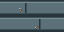

汽轮机中大型机壳疏线候选
每档均为8格长真实OBJ组装，含front、6个middle与rear。d5周期2、d7周期3；每个atlas相位格为16×16，d3与R1端盖保持不变。

直接打开同目录SVG也可单独检查；稀疏纹理已安装试用，客户端视觉待复看。
d3：8格机壳
轴向顺序：front → middle × 6 → rear。
现行B
保持原样
d5：8格机壳
轴向顺序：front → middle × 6 → rear。
现行B
R2稀疏相位候选
d7：8格机壳
轴向顺序：front → middle × 6 → rear。
现行B
R2稀疏相位候选
观察窗：单窗与三窗沿轴向连接
依据消费者交付的实际 d5 合法中段 mesh、UV 与 alpha。仅同尺寸窗口沿轴向相邻连接；游戏侧限制为同piece、同朝向、同成型状态的合法中段窗，端盖与其他部件会截断。
1个合法中段单窗：原模型mesh
3个原模型：尚未连接
3个实际连接mesh：共享端框撤除、玻璃跨格
预览使用消费者离线烘焙quad证据及原PNG纹理/顶点透明度，不等于客户端GPU截图或最终游戏视觉验收。